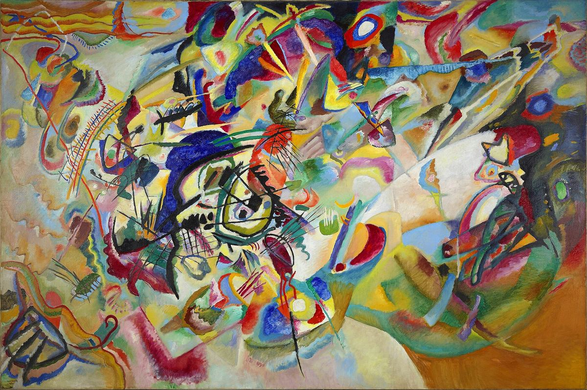

Composition VII

Palette
- Sage · your word: Sage
- Payne's grey · your word: Charcoal
- Olive green · your word: Khaki
- Golden brown · your word: Sienna
- Cordovan · your word: Raspberry
- Dark slate blue · your word: Indigo
Kandinsky made more than 30 studies, then painted the final canvas in four days, 25 to 28 November 1913, while Gabriele Münter photographed each stage. In Concerning the Spiritual in Art he compared color to a keyboard and the soul to a piano. Up close it is a clash of pure reds, yellows and blues; the swatches here are muddier because its patches are so small and so mixed.
Image
Wikimedia Commons · Public domain

Hex values are screen approximations. Every page lists its sources.